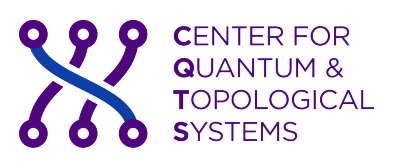
Research symposium
Topological properties and potential transport of excitons in electrically biased AB-stacked bilayer graphene
Sviatoslav Gladyshev
Supervisor: Dr. Marwa Mannai
Center for Quantum and Topological Systems, NYU Abu Dhabi · Ateno
Motivation
Bound.
An electron and a hole, held by Coulomb attraction: a composite boson.
Neutral.
No net charge current, yet energy and information still move.
Geometric.
Their motion can depend on the geometry of the exciton band.
If the composite inherits band geometry, an electric field could steer how it moves.
2
Recreation
Live illustration · not to scale
3
The platform
300 meV
Largest DFT gap at strong perpendicular field. The layers shift by ±U/2 with U ~ eFd, and the band edge moves onto a ring.
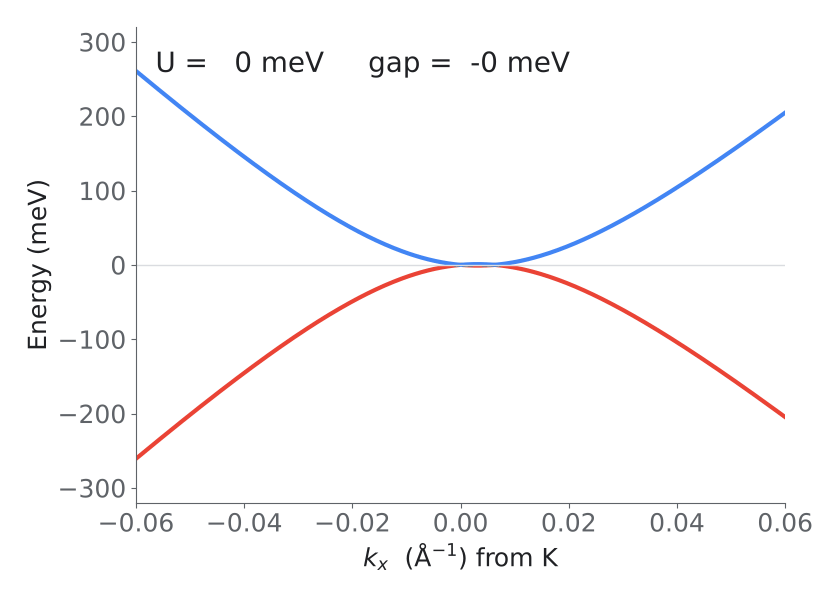
Four-band continuum model · γ₀ = 3.0, γ₁ = 0.40, γ₃ = 0.30 eV
4
Proof · step 0
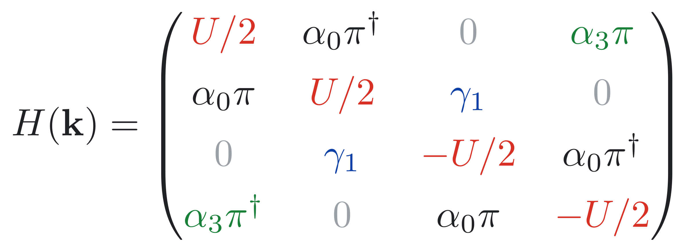
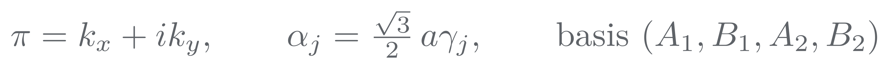
α₀ intralayer A ↔ B
γ₁ dimer B₁ ↔ A₂
α₃ skew A₁ ↔ B₂
±U/2 layer bias
5
Proof · step 1
Proof · step 1 of 7
1
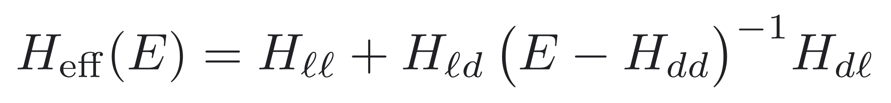
Project onto ℓ = (A₁, B₂); d = (B₁, A₂).
2
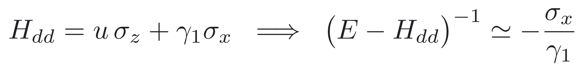
Valid for |E|, |u| ≪ γ₁ ≈ 0.4 eV.
3
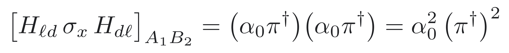
Only path: A₁ → B₁ ⇒ A₂ → B₂.
4
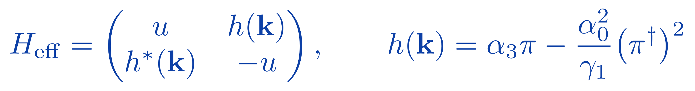
β ≡ α₀²/γ₁ ≈ 102 eV Ų.
6
Proof · step 2
Proof · step 2 of 7
1
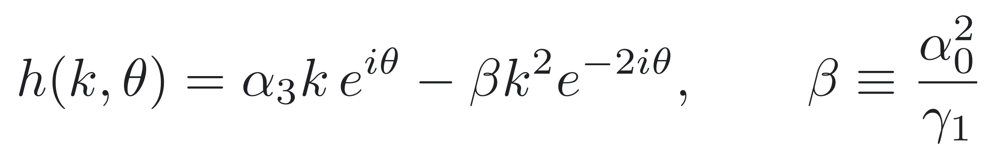
Polar form, π = k e^{iθ}.
2
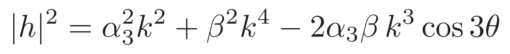
Two windings interfere: e^{iθ} and e^{−2iθ}.
3
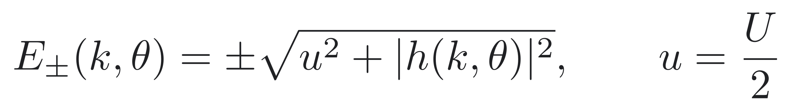
Gap Δ = 2√(u² + |h|²) ≥ |U|.
4
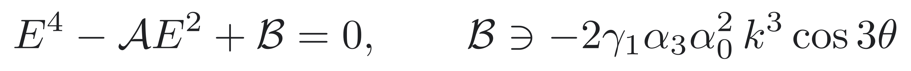
The same cos 3θ survives the exact 4 × 4 problem.
5
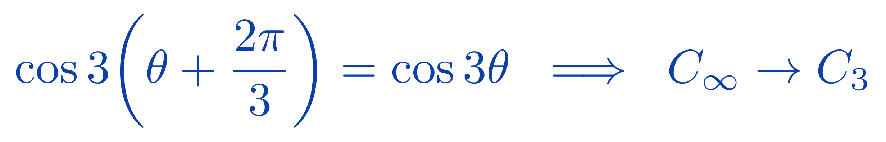
γ₃ = 0 removes θ entirely: C∞.
7
Proof · step 3
Proof · step 3 of 7
1
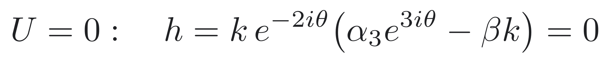
2
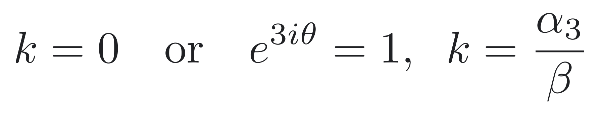
3
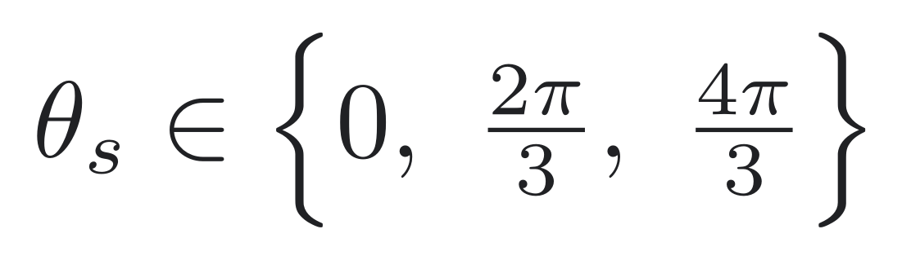
4
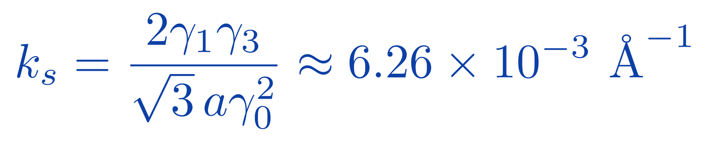
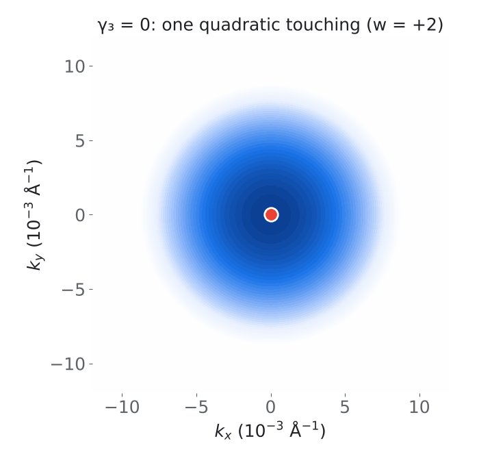
8
Proof · step 4
Proof · step 4 of 7
1
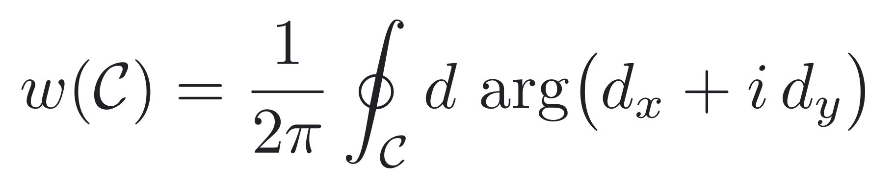
Pseudospin d = (Re h, −Im h).
2
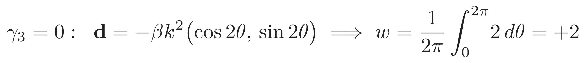
Integrand is exactly 2.
3
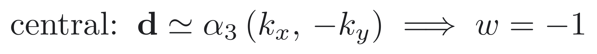
Linear term dominates as k → 0.
4
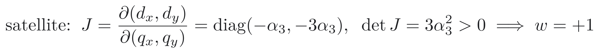
w = sgn det J for a linear node.
5
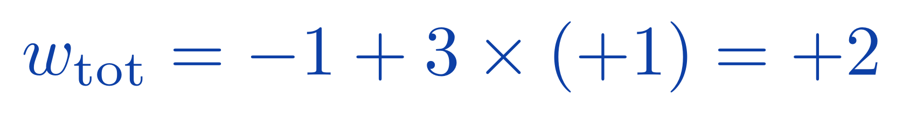
γ₃ redistributes, never changes.
9
Visual · winding
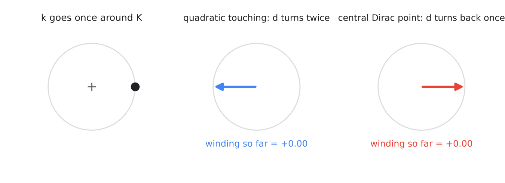
Computed from h(k) of the effective two-band model
10
Electronic geometry
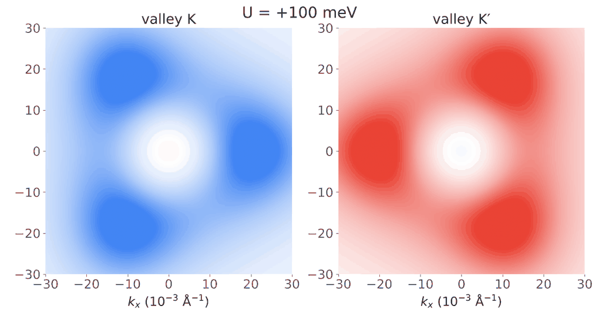
Two-band model, conduction band, U swept between +100 and −100 meV · blue Ω < 0, red Ω > 0
11
Proof · step 5
Proof · step 5 of 7
1
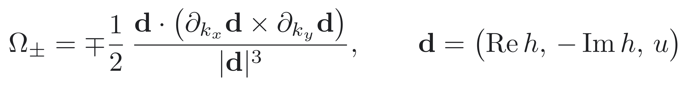
Standard result for H = d · σ.
2
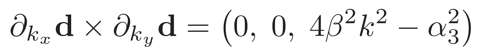
From ∂d over k: J(k) = 4β²k² − α₃².
3
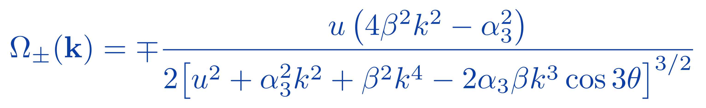
Triple product = u (4β²k² − α₃²).
4
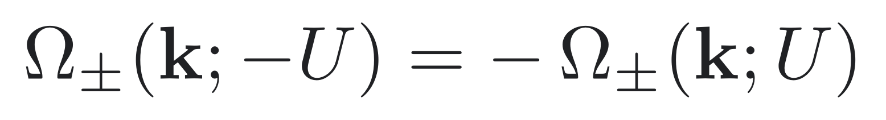
Numerator odd in u, denominator even.
5
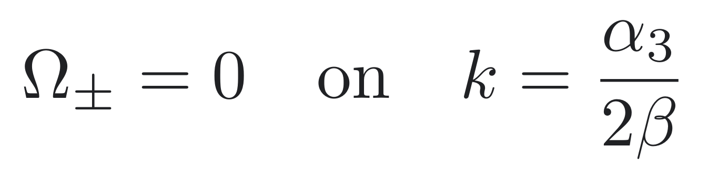
Sign-changing ring: the lobes.
12
Proof · step 6
Proof · step 6 of 7
1
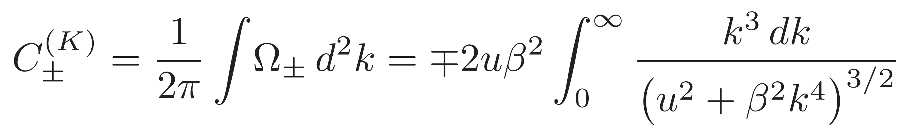
γ₃ = 0: curvature is θ-independent.
2
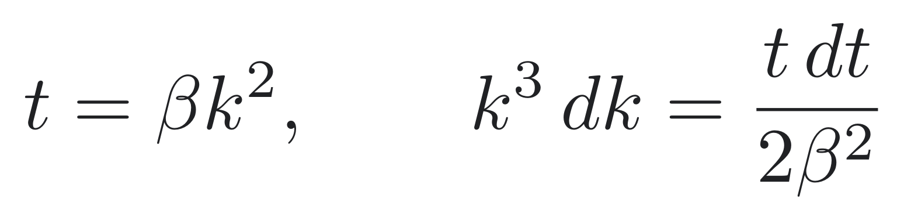
Substitute t = βk².
3
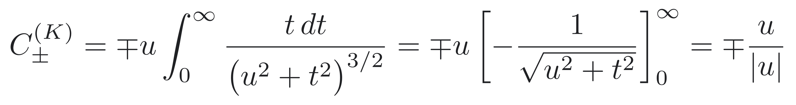
Elementary antiderivative.
4
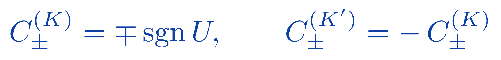
Time reversal: net Chern number = 0.
13
Proof · step 7
Proof · step 7 of 7
1
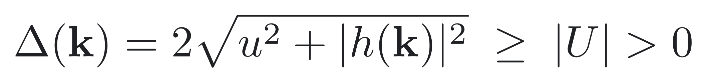
The gap never closes as γ₃ is switched on.
2
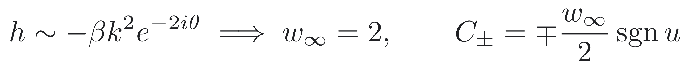
Fixed by the winding at large k.
3
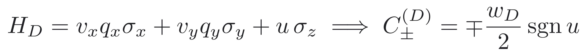
Each massive Dirac node contributes ∓ w/2.
4
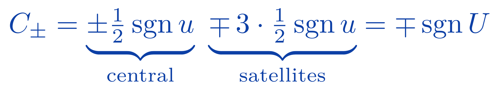
Central + three satellites.
14
The question
Excitons · equations
Exciton maths · step 1 of 4
1
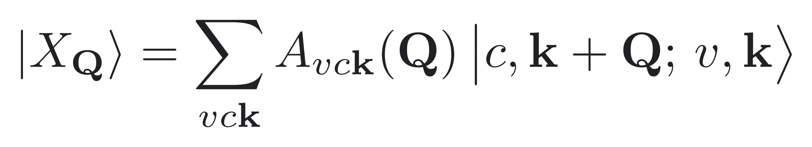
A superposition of e–h transitions.
2
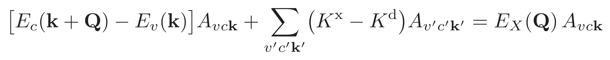
Kᵈ: screened attraction. Kˣ: exchange.
3
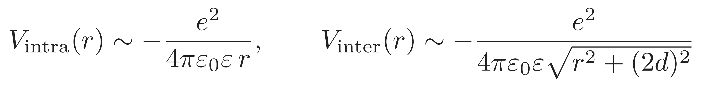
Interlayer: 2d ≈ 3.48 Å apart.
4
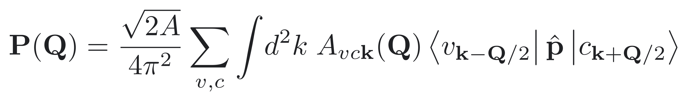
Brightness is a coherent sum.
5
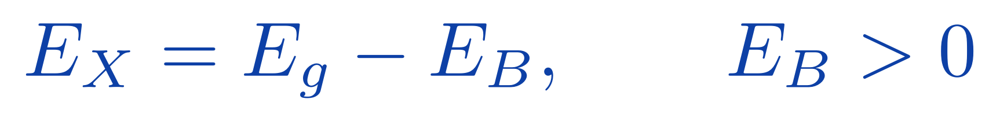
Bound below the continuum.
16
Known · optics
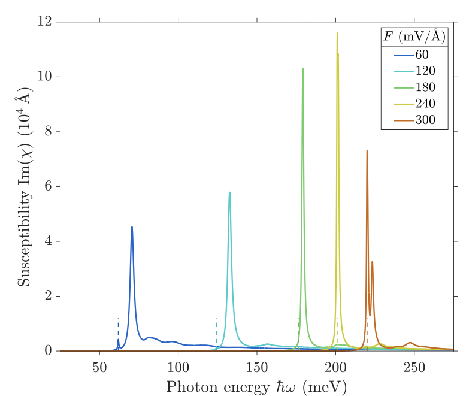
240 mV/Å
Dark and bright excitons swap order. The crossing barely moves between suspended and hBN-encapsulated samples.
Figure: Sauer & Pedersen, Phys. Rev. B (2022), arXiv:2110.14428
17
Proof · selection rule
Exciton maths · step 2 of 4
1
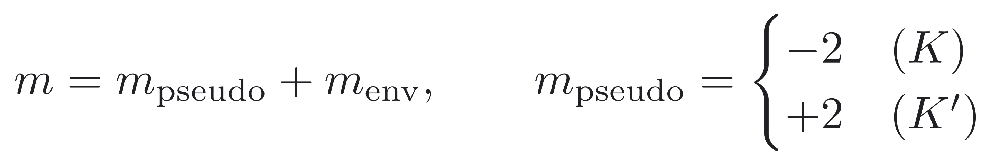
Pseudospin + envelope.
2
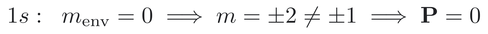
1s: dark.
3
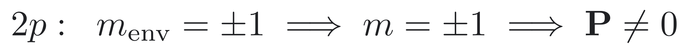
2p: bright.
4
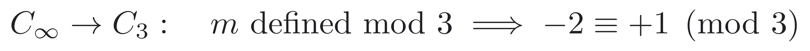
Warping allows weak coupling: mostly dark.
5
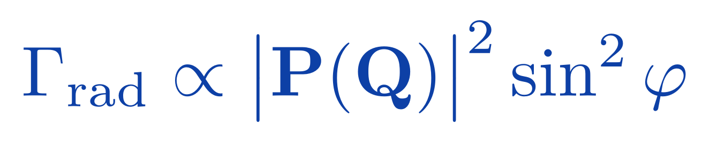
Dipole pattern, φ = ∠(q, P).
18
Known · layer structure
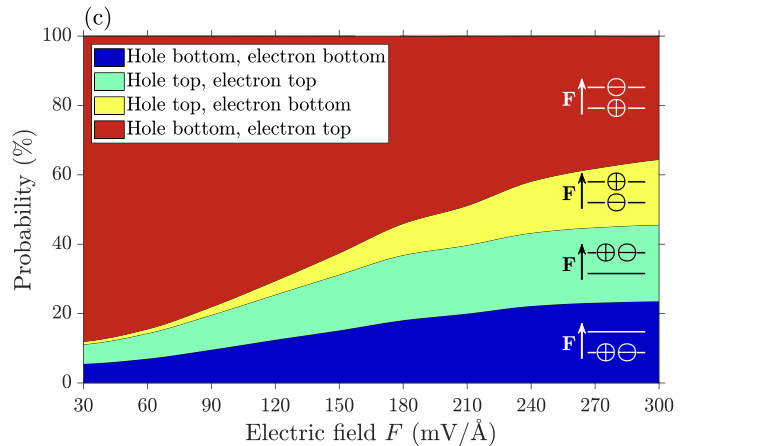
Hole bottom, electron top.
The dipole points against F. More field means more intralayer weight, larger overlap and a brighter exciton.
Figure: Sauer & Pedersen, Phys. Rev. B (2022), arXiv:2110.14428
19
Proof · exciton dispersion
Exciton maths · step 3 of 4
1
Eq. (1): intervalley exchange.
2
Two powers of Q over one.
3
Linear and parabolic branches.
4
Dark: p ≈ 0.
20
Known · exciton bands
Isotropic at 120 mV/Å, trigonal at 180 mV/Å, on the inter-minivalley scale. This is the energy, not yet the Berry curvature.
Figure: Sauer & Pedersen, Phys. Rev. B (2022), arXiv:2110.14428
21
Proof · emission
Exciton maths · step 4 of 4
1
Only small-Q excitons radiate.
2
The light cone is tiny.
3
Boltzmann-averaged rate.
4
τ(T) is non-monotonic.
22
Visual · emission
Schematic model, illustrative parameters
23
What could topology add?
Berry curvature
Does exciton Berry curvature give a transverse velocity under a force?
Quantum geometry
Can geometric terms enhance ordinary diffusion or drift?
Edge states
Does an exciton band support robust boundary modes?
“Topological” in the strong sense only once one of these is actually shown.
24
Recent literature
| Work | What it supports | Role here |
|---|---|---|
| Duarte et al. 2025 · biased BLG | Exciton-polaritons; tunable light–matter coupling | Same platform, but polaritons |
| Davenport, Schindler & Knolle 2025 | Exciton Berry curvature in rhombohedral graphene | Closest precedent |
| Nat. Commun. 16, 11448 (2025) | Geometry can enhance exciton diffusion | Motivates the observable |
| Nat. Commun. (2024) · perovskite | Room-temperature valley polariton propagation | Precedent, other platform |
| Jiang et al. 2025 · ACS Nano | Gated, directed neutral-exciton drift | Device motivation, not topological |
Full references on the last slide
25
The proposal
Electron bands
→
e–h pairs
→
Exciton band
→
Transport
Proposed. Not yet verified. An exciton is not automatically assigned the Chern number of one constituent band.
26
Proposal · definition
Proposal · step 1 of 2
1
Envelope part plus electron Bloch part; electron at k + Q, hole at k.
2
Lives in Q-space, not k-space.
3
Fukui–Hatsugai–Suzuki plaquettes on a Q grid.
4
Valley-odd, like the electrons.
27
Proposal · observable
Proposal · step 2 of 2
1
2
3
4
28
A falsifiable hierarchy
L1
Diffusion
Spreads down a gradient. No geometry needed.
L2
Anomalous drift
A force bends the velocity through exciton Berry curvature.
L3
Edge transport
A boundary channel tied to a nonzero exciton Chern number.
Which is both calculable in AB bilayer graphene and distinguishable in experiment?
29
Roadmap
Done
Electronic baseline
H, warping, winding, Ω(k), Chern: proven above
Next
Exciton problem
Basis, screening, BSE at finite Q
Planned
Exciton geometry & transport
Lattice Berry curvature, diffusion tensor, edges
Planned
Experiment
Bias-tunable optical or spatial signatures
Risks: basis and screening · valley cancellation · lifetime and disorder · what “topological” means for a neutral composite
30
For discussion
What is the smallest defensible exciton calculation that answers a transport question?
Focus
Start with exciton Berry curvature and anomalous drift?
Criterion
What counts as genuinely topological, beyond inherited geometry?
Model
Effective mass, BSE, or another route?
Valleys
Do K and K′ cancel, add, or become bias-selective?
Experiment
Optics, drift, diffusion or edge emission?
31
Beyond the lab
Robots need a map where GPS fails.
A dedicated chip for on-device 3D mapping: robots and drones train and render Gaussian-splat maps while they move, with no datacenter GPU.
173,161
Gaussians in one 1080p frame on our FPGA prototype
3.9×
faster per frame in 10 days: 1.02 s → 262 ms
Next
silicon tape-out with design partners; no chip yet
ateno.co · Sviatoslav Gladyshev, co-founder & CEO
32
Takeaway
● Electronic geometry: proven
● Exciton physics: mapped
● Exciton curvature: next
Thank you.
With thanks to my supervisor, Dr. Marwa Mannai, and CQTS, NYU Abu Dhabi
References
M. O. Sauer & T. G. Pedersen, “Exciton absorption, band structure, and optical emission in biased bilayer graphene,” Phys. Rev. B (2022), arXiv:2110.14428.
E. McCann & M. Koshino, “The electronic properties of bilayer graphene,” Rep. Prog. Phys. 76, 056503 (2013).
E. McCann & V. I. Fal’ko, Phys. Rev. Lett. 96, 086805 (2006).
C.-H. Park & S. G. Louie, “Tunable excitons in biased bilayer graphene,” arXiv:1002.2159 (2010).
T. Fukui, Y. Hatsugai & H. Suzuki, “Chern numbers in discretized Brillouin zone,” J. Phys. Soc. Jpn. 74, 1674 (2005).
Duarte et al., arXiv:2502.06640 (2025). Davenport, Schindler & Knolle, arXiv:2508.03290 (2025).
“Topologically enhanced exciton transport,” Nat. Commun. 16, 11448 (2025), doi:10.1038/s41467-025-66276-9.
“Perovskite topological valley exciton-polaritons at room temperature,” Nat. Commun. (2024), doi:10.1038/s41467-024-54658-4.
Jiang et al., “Nanoengineered optoexcitonic switch,” ACS Nano (2025), doi:10.1021/acsnano.5c05057.
Supervisor: Dr. Marwa Mannai · CQTS, NYU Abu Dhabi
34
Show slides on